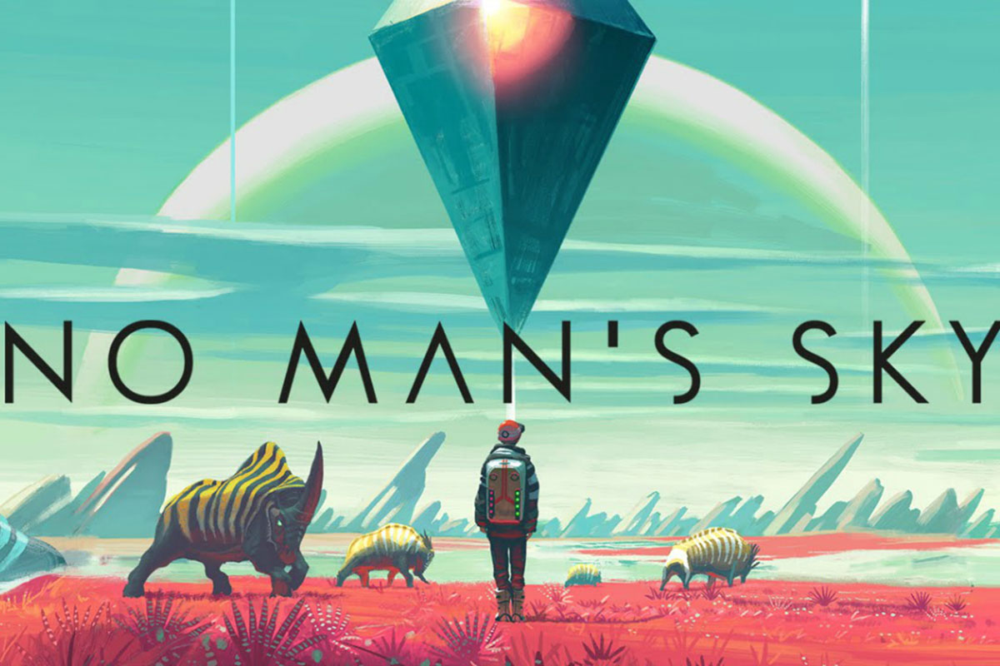

No Man's Sky
|
發行日期 : 2016年8月9日
|
|
遊戲內容
遊戲基於探索，生存，戰鬥和交易四大支柱。玩家可以自由地在隨機生成的確定性開放宇宙遊玩，這其中包括數以億計（1.8×1019）的行星，許多行星都有自己的動植物群。
玩家參與到共享的宇宙中，能夠與其他玩家交換行星資訊，遊戲也完全可以離線遊玩。程式生成系統確保玩家在指定行星坐標時，可以找到生命形式和其他方面都相同的行星，不需要進一步存儲資料或從遊戲伺服器檢索。星系、行星及其生態系統、動植物及其行為模式、人造結構，外星派系及其航天飛船等幾乎所有遊戲元素都由程式生成。